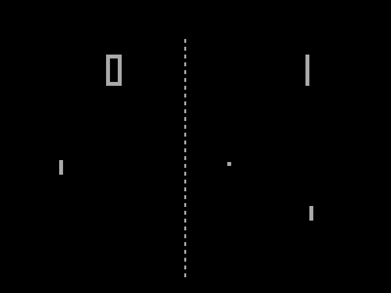
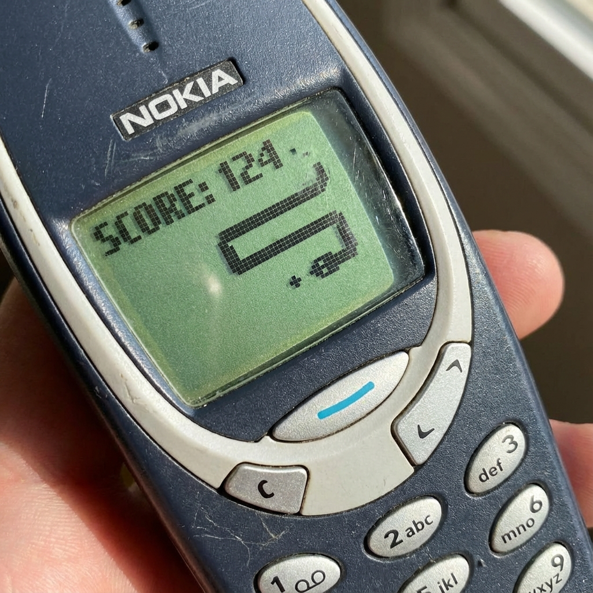
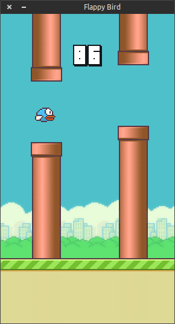

Doel van de opdracht
Dit is de eindbaas van je informatica-curriculum. Je gaat niet één, maar drie klassieke games bouwen om je programmeerskills te bewijzen. Als klapstuk ontwerp en bouw je je eigen 'Boss Level': een unieke game of feature die laat zien wat je in huis hebt.
In deze opdracht krijg je geen kant-en-klare code. Je krijgt doelen, tips en zoektermen. Het is aan jou om de puzzelstukjes te vinden en in elkaar te leggen.
Differentiatie
Iedereen kan deze opdracht halen, maar op zijn eigen niveau:
- De Basis (Cijfer 6-7): Je bouwt de drie games en een eigen eindbaas werkend volgens de minimumeisen.
- De Expert (Cijfer 8-10): Je voegt aan alle games expert features toe en je eindbaas is technisch indrukwekkend.
Leerdoelen
- Je kunt een 'Game Loop' bouwen en begrijpen.
- Je past botsingdetectie (Collision Detection) toe.
- Je werkt met lijsten/arrays om game-objecten (zoals een slang) te beheren.
- Je simuleert eenvoudige physics (zwaartekracht).
- Je leert zelfstandig documentatie en oplossingen zoeken.
Keuze van de Engine
Je mag zelf kiezen in welke taal/omgeving je dit maakt. Enkele aanraders:
- Python (Pygame Zero): Zeer geschikt voor beginners. Simpel en krachtig. (Aanbevolen)
- JavaScript (P5.js of Canvas): Goed als je je game in de browser wilt laten werken.
- Info (Godot/Unity): Alleen voor gevorderden die al ervaring hebben. Let op: dit kost veel tijd om te leren!
Fase 1: Pong (The Basics)
We beginnen bij het begin. Pong is de oervader van videogames. Je gaat dit klassieke spel uit 1972 namaken. Het doel is simpel: voorkom dat de bal achter jouw batje verdwijnt en probeer te scoren bij de tegenstander.
In deze fase focus je op de basis van elke game: de Game Loop. Je leert hoe je objecten op het scherm tekent, hoe je luistert naar toetsenbordaanslagen om je batje te bewegen, en hoe je controleert of de bal iets raakt (botsingdetectie of collision detection).

Functionaliteitseisen
- Twee batjes die verticaal bewegen.
- Bal kaatst tegen muren en batjes.
- Score wordt bijgehouden in de console of simpel op scherm.
- Bal gaat sneller na elke kaats.
- De AI-tegenstander is 'verslaanbaar' (maakt fouten).
- Geluidseffecten bij kaatsen/scoren.
Handige zoektermen
- "Pygame Zero bouncing ball"
- "Simple control player paddle logic"
- "AABB Collision detection" (voor als je het chique wilt doen)
Stappenplan
-
Installatie & Setup
Zorg dat je Pygame Zero (pgzero) hebt geïnstalleerd. In Thonny of Mu Editor zit dit vaak al ingebouwd.
Zoek op: "Pygame Zero introduction tutorial" of bekijk de officiële documentatie. -
Het raamwerk (Window)
Maak een zwart scherm van 800x600. Zorg dat je de `draw()` en `update()` functies hebt staan. -
De Bal (Actor)
Teken een vierkantje of gebruik een sprite voor de bal. Zorg dat hij beweegt (x + speed, y + speed).
Tip: "Pygame Zero Actor example" -
Botsen met muren
Alsbal.y > 600ofbal.y < 0, draai dan de snelheid om (speed * -1). -
De Batjes (Input)
Laat een batje bewegen zolang je 'W' of 'S' ingedrukt houdt (keyboard check). -
Collision (De moeilijkste stap!)
Gebruikbal.colliderect(batje)om te checken of ze elkaar raken.
Fase 2: Snake (Arrays & Grid)
Nu gaan we een stapje verder. Je gaat de beroemde Nokia-klassieker Snake namaken. Waar je in Pong slechts één bewegend object (de bal) had, bestuur je nu een slang die steeds langer wordt.
De uitdaging hier is logica en datastructuren. De slang is niet één plaatje, maar een reeks blokjes die elkaar moeten volgen. Je gaat leren werken met lijsten (Arrays/Lists) om bij te houden waar elk stukje van de slang zich bevindt. Ook maak je kennis met een grid-systeem: de slang kan niet 'half' bewegen, maar verspringt per vakje.

Functionaliteitseisen
- Slang beweegt en groeit bij eten.
- Game Over bij botsing met zichzelf/muur.
- Voedsel verschijnt willekeurig.
- Highscore wordt opgeslagen in een bestand.
- Muren 'wrappen' (je komt er aan de andere kant uit).
- Super-food dat na x seconden verdwijnt.
Handige zoektermen
- "Python list append and pop" (De 'snake queue' techniek)
- "Grid based movement game"
- "Modulo operator for screen wrapping" (optioneel, als je door muren heen wilt kunnen)
Stappenplan
-
Het Grid-idee
Snake beweegt niet per pixel, maar per 'blokje' (bijv. 20x20 pixels). Teken eerst eens een grid op papier. -
De Slang als Lijst
Dit is de kern. Je slang is een lijst van coördinaten:slang = [[100, 50], [80, 50]](Hoofd, Staart).
Zoek op: "Python list append and pop snake logic" -
Bewegen = Hoofd erbij, Staart eraf
Elke 'tick' (bijv. 4x per seconde) bereken je de nieuwe positie van het hoofd. Voeg die toe aan het begin van de lijst (insert) en haal de laatste weg (pop). -
Eten = Niet poppen
Als het hoofd op hetzelfde vakje als de appel komt, haal je de staart niet weg. Dan wordt de lijst 1 langer!
Fase 3: Flappy Bird (Physics & Assets)
Tijd voor zwaartekracht. Je gaat de frustrerend moeilijke hit Flappy Bird namaken. In plaats van sturen in vier richtingen, heb je nu maar één knop: 'Jump'.
In deze fase introduceer je Physics: als de speler niets doet, moet de vogel naar beneden vallen door de zwaartekracht. Alleen door te klikken of te tikken krijgt de vogel een zetje omhoog. Daarnaast ga je werken met echte plaatjes (sprites) in plaats van simpele vierkantjes, zodat je game er professioneel uit gaat zien.
Functionaliteitseisen
- Zwaartekracht (vogel valt steeds sneller).
- Sprong (reset verticale snelheid).
- Obstakels bewegen en hebben gaten.
- Rotatie van de vogel (neus omlaag bij vallen).
- Parallax achtergrond (wolken gaan trager dan buizen).
- Startscherm en nette *Game Over* state.

Handige zoektermen
- "Implementing gravity in game loop"
- "Load sprites Pygame Zero"
- "Flappy bird pipe generation logic"
Stappenplan
-
Zwaartekracht (Gravity)
Maak een variabelegravity = 0.5en eenspeed_y = 0. Elke frame doe je:speed_y += gravityen daarnavogel.y += speed_y.
Kijk video: "Pygame Zero Flappy Bird Gravity tutorial" -
Springen
Als je klikt of spatie drukt, zet jespeed_y = -8. De vogel schiet omhoog en zwaartekracht trekt hem daarna weer omlaag. -
De Pijpen (Lijsten van Actors)
Maak een lijstpijpen = []. Elke 2 seconden voeg je een nieuwe pijp (Actor) toe aan de lijst. Loop door de lijst en doepijp.x -= 3. -
Schoonmaak
Alspijp.x < -50, verwijder hem dan uit de lijst om je geheugen schoon te houden.
Fase 4: De Eindbaas (Eigen Creatie)
Gefeliciteerd, je hebt de training doorstaan. Nu is het tijd voor je meesterproef. Je gaat ofwel één van de bovenstaande games drastisch uitbreiden, ofwel een compleet nieuwe game bouwen.
Ideeën ter inspiratie:
- Pong++: Power-ups (grotere batjes, snellere bal, dubbele bal), effecten, particles als de bal raakt.
- Battle Snake: Een multiplayer snake-versie waarbij je elkaar kunt afsnijden (zoals Tron).
- Platformer: Een Mario-achtige game met levels en vijanden.
Eisen Eindbaas
- Het spel moet 'af' voelen: Startscherm, Game Over scherm, en mogelijkheid om opnieuw te beginnen.
- Code is netjes, voorzien van commentaar en logische variabelenamen.
- Je voegt iets unieks toe dat je zelf hebt bedacht en uitgezocht.
Inleveren
Je levert deze opdracht in via je eigen portfolio-website:
- Maak een ZIP: Stop je code (alle fases) en assets in één map. Klik rechts en kies 'Comprimeer' (Mac) of 'Kopiëren naar > Gecomprimeerde map' (Windows). Chromebook: gebruik 'Comprimeer'.
- Upload naar je portfolio: Zet dit ZIP-bestand op je eigen portfolio-website. Maak een downloadlink aan.
- Reflectie: Schrijf een uitgebreide reflectie per fase (Pong, Snake, Flappy Bird, Eindbaas) op dezelfde pagina.
- Wat ging er goed en wat was lastig?
- Welke keuzes heb je gemaakt (bijv. voor de expert features)?
- Hoe heb je bugs opgelost?
- Lever de opdracht in: Vul het inleveren formulier in op de site.
Beoordelingsmodel
| Onderdeel | 1 punt (Matig) | 2 punten (Voldoende) | 3 punten (Goed/Excellent) |
|---|---|---|---|
| De 3 Basisgames Pong, Snake, Flappy Bird |
Slechts 1 game werkt, OF poging gedaan tot alle 3 maar met frequente crashes/fouten. | 2 van de 3 games werken goed, OF alle 3 zijn aanwezig maar bevatten storende fouten (bijv. bal gaat door batje, slang eet zichzelf niet). |
HAVO: Alle 3 de games zijn volledig speelbaar en de basismechanics kloppen. (Schoonheidsfoutjes mogen). VWO: Alle 3 werken foutloos en spelen soepel. |
| Verdieping Expert features (Max 2pt) |
HAVO: Feature geprobeerd maar werkt half. VWO: Slechts 1 of 2 expert features per game |
HAVO: Minimaal 1 expert feature per game. VWO: Alle expert features zijn werkend. |
N.v.t. (Max 2 punten) |
| De Eindbaas Eigen creatie |
Zeer simpele variatie op bestaande game of duidelijk onaf (geen start/eind). | Leuke, werkende game. Mist nog 'polish' (intro/game over) of originaliteit. |
HAVO: Eigen twist, goed afgewerkt, bugvrij. VWO: Technisch complex (AI/Physics/Systems) en zeer gepolijst. |
| Code & Proces (Max 2pt) |
Code werkt, maar is rommelig, onduidelijke namen of mist structuur. |
HAVO: Leesbaar, logische variabelenamen. VWO: Modulair (functies/klassen) en voorzien van commentaar. |
N.v.t. (Max 2 punten) |
| Reflectie & Inleveren (Max 2pt) |
Reflectie is zeer kort (1-2 zinnen per fase) of mist fases. Downloadlink werkt, maar portfolio is minimaal. | Uitgebreide reflectie per fase met analyse van problemen/oplossingen. Downloadlink staat netjes op de pagina. | N.v.t. (Max 2 punten) |
Cijfer = ((Totaal - 2) / 10) * 9 + 1
(Bij minder dan 2 punten is het cijfer 1.0)
Cijfertabel
| Punten | Cijfer |
|---|---|
| 5 | 3,7 |
| 6 | 4,6 |
| 7 | 5,5 |
| 8 | 6,4 |
| 9 | 7,3 |
| 10 | 8,2 |
| 11 | 9,1 |
| 12 | 10,0 |